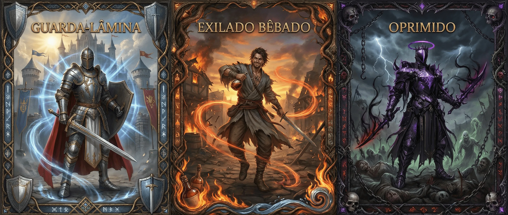

Espadachim

"Desde o início, ela sempre esteve lá. Sua espada — fiel, silenciosa, letal — te conhece melhor que qualquer pessoa neste mundo brutal. Vocês sangraram juntos, mataram juntos, sobreviveram juntos."
Você aprendeu a ser paciente. Observar. Respirar. Esperar o momento exato em que a guarda baixa, em que o peso muda para o pé errado. Seu corpo é sua arma tanto quanto o aço em suas mãos.
⚔️ Proficiência com Espadas
Acostumado a se sustentar em apenas um tipo de dano, possui especialidade em causar dano cortante. Você ignora Ar (Armadura) em ataques com espada igual ao seu nível, adicionalmente você ignora resistência a dano Cortante a partir do nível 3.
🎯 Marca do Duelo
O Espadachim é o mestre duelista, mantendo foco unitário em um único alvo antes de partir para o próximo. Ele marca o próximo alvo que pretende assassinar. Você pode manter 1 Marca do Duelo ativa:
- Marque uma criatura que você possa ver com 1 ação, em até 9 m.
- Contra o alvo marcado você tem +1 Atacar e +1 Defender. No nível 3, +2 Atacar e +2 Defender. No nível 5, +3 Atacar e +3 Defender.
- Se o alvo marcado morrer, você pode marcar um novo alvo como reação imediatamente.
- Você só pode ter uma Marca ativa.
❤️ Saúde
10 + (6 × Nível) + (Mod.CON × Nível)
⚡ Stamina
8 + (6 × Nível) + ([Mod.FOR OU Mod.DES] × Nível)
💫 Éter
6 + (3 × Nível) + ([Mod.INT OU Mod.SAB] × Nível)
🛡️ Evasão Ativa
10 + Mod.Des + Prof.Defender
🛡️ Evasão Passiva
10 + Mod. Destreza
📈 Progressão
| Nível | Técnicas | Técnicas de Ramo | Marcas |
|---|---|---|---|
| 1 | 4 Técnicas | — | — |
| 2 | 5 Técnicas | Tier 1 | — |
| 3 | 6 Técnicas | Tier 1 | 1 Marca |
| 4 | 7 Técnicas | Tier 1, 2 | 2 Marcas |
| 5 | 8 Técnicas | Tier 1, 2, 3 | 3 Marcas |
Treinamentos Iniciais
Armas Marciais, Atacar, Defender
+ Escolha (1 + Mod.Int) dentre: Movimento, Fortitude, Sobrevivência, Intimidação, Reflexos
⚔️ Técnicas Gerais
Você possui 3 + Nível técnicas. Podem ser reatribuídas em descanso longo.
Leitura de Batalha
Ao atacar um inimigo com a Marca do Duelo, você tem +3 Atacar.
Peso do Fracasso
Retaliar um inimigo com a Marca do Duelo causa +(Nível)d6 de dano Cortante.
Limiar da Morte
Ao estar com ≤ 50% de Saúde, seus ataques contra a Marca do Duelo causam +2d6 de dano Cortante.
Pedra de Amolar
Você pode gastar sua ação de descanso curto para amolar sua espada: ela passa a causar +1d4 de dano Cortante, porém apenas durante o próximo combate — depois disso, ela volta ao normal.
Respiro do Espadachim
Em combate, recupera Stamina = Mod.Con +1d4 e recebe +2 Defender até o início do próximo turno. (1x/turno)
Lâmina Rápida
Ataque duas vezes como 1 ação. Esses ataques não podem receber retaliação.
Corte Diagonal
Seu próximo ataque tem +2 no acerto. Se acertar um inimigo com a Marca do Duelo, adiciona Sangramento 1.
x1
Foca em um alvo com a Marca do Duelo em até 9m. Enquanto ele estiver isolado (ao menos 1,5m de outros inimigos): +1d10 de dano Cortante e Vantagem ao Atacar contra ele. Ao trocar o alvo da Marca, você perde os efeitos e precisa usar a técnica novamente.
Oportunista
Você pode, como ação livre, reduzir a PMA para -3 (ao invés de -5) nesta rodada.
Quebrar Postura
Ao acertar um alvo com a Marca do Duelo, ele perde sua reação até o fim da rodada. Ele ainda pode bloquear ou retaliar, mas perde a reação em seguida se for acertado.
Ponto Fraco
Ao atacar um inimigo Exposto, você pode, como ação livre, gastar 5 de Stamina para manter a condição no inimigo, mesmo após atacar.
Passo Afiado
Quando inimigo errar você: mova 1,5m sem ataque de oportunidade.
Corta-Luz
Quando errar ataque: faça segundo ataque contra o mesmo alvo, com -2.
Bilhete de Entrada
Quando um inimigo entrar no seu alcance, pode atacar imediatamente com -5.
Brecha
Ao acertar alvo não Exposto: aplica Exposto como 1 ação. Se já Exposto: adiciona Sangramento 1 como ação livre. (1x/turno)
🌳 Ramos do Espadachim
Os ramos são caminhos irreversíveis que definem seu personagem. Você escolhe 3 Marcas e 6 Técnicas de Ramo (3 no Tier 1, ao chegar ao nível 2; 2 no Tier 2, no nível 4; e 1 Ultimate no Tier 3, no nível 5) ao longo da progressão. É aceitável misturar os 3 ramos.
🛡️ Ramo do Guarda-Lâmina
Você jurou um voto que transcende meras palavras — sua lâmina permanece embainhada até que o sangue precise ser derramado. Num mundo onde a violência é moeda corrente e a morte espreita em cada esquina escura, você aprendeu que revelar sua arma cedo demais é desperdiçar o elemento surpresa. Sua filosofia é simples: observe, aguarde, e quando a lâmina finalmente cantar, que seja o último som que seu inimigo ouvirá. Você não busca glória nos campos de batalha — busca justiça silenciosa, executada com precisão cirúrgica. Aqueles que subestimam sua contenção descobrem tarde demais que a paciência do Guarda-Lâmina é apenas a calmaria antes da tempestade de aço.
⚜️ Marcas do Guarda-Lâmina
Disciplina
"Você é frio e age apenas quando necessário."
Você é friamente disciplinado e segue um conjunto de valores difíceis de quebrar.
- Para cada 5 combates onde a Marca do Duelo te atacou antes de você atacá-la, você ganha +1 permanente em Vontade. (Máx. +5)
- Na primeira vez em cada combate que você sofre um ataque antes de ter atacado, recupere Stamina igual ao seu Mod. Constituição.
Caça Fardos
"Você busca criaturas indignas, e as assassina com prazer."
Você é naturalmente benevolente e busca punir criaturas bestiais/monstruosas.
- Para cada 5 criaturas monstruosas ou malignas que você matou, você ganha +1 permanente em Sobrevivência. (Máx. +5)
- Você consegue localizar a Marca do Duelo em qualquer situação, mesmo que ela esteja Invisível ou escondida.
Parry Perfeito
Ao defender um ataque da Marca do Duelo com sucesso, Retalie como Ação Livre.
Duelista Intocável
Você se torna Treinado em Defender (se já for, Experiente, e assim por diante).
- Enquanto não tiver realizado ataques nesta rodada, você ganha +5 em testes de Defender.
- Você ignora todo Ar (Armadura) ao Retaliar.
Guardar a Lâmina
Até próximo turno: +2 Defender. Sua primeira retaliação não gasta reação.
Contra-guarda
Se você não realizou nenhum ataque no seu turno, sua próxima retaliação contra a Marca do Duelo causa dano crítico.
Inimigo Mortal
Até o início do seu próximo turno, você pode retaliar a Marca do Duelo até 2 vezes sem gastar reação.
Sentença Final
"A morte chega para todos os pecadores"
Escolha 1 inimigo que esteja com a Marca do Duelo. Você e o inimigo são transportados para um plano impossível. A única saída é evidente. A morte de um dos dois:
- Você e a Marca do Duelo são arrancados do campo de batalha para o Plano Místico até a morte de um dos dois.
- Enquanto neste plano, suas retaliações não gastam reação.
⚠️ O Custo
Sua espada foi danificada. Perca 2d10 de Éter. A Trama decidiu o seu destino.
💢 Ramo do Oprimido
Você cresceu sob o peso do desprezo alheio. Cada insulto, cada olhar de desdém, cada porta fechada alimentou a brasa que agora arde como forja em seu peito. Num mundo onde os fortes pisoteiam os fracos e a corrupção rasteja até os corações mais nobres, você aprendeu que gentileza é fraqueza e piedade é luxo. Sua lâmina não conhece contenção — ela existe para fazer seus opressores provarem o gosto do próprio sangue misturado ao metal que você empunha com ódio concentrado. Você não luta por honra ou justiça; luta porque a raiva é a única emoção que nunca te traiu, e cada golpe que desfere é uma declaração visceral de que você se recusa a ser quebrado novamente.
⚜️ Marcas do Oprimido
Nostalgia
"Como eles ousam ter te desrespeitado?"
Você é rancoroso em seu cerne, guarda mais mágoas do que deveria.
- Para cada 5 criaturas que te causaram dano e que você matou, você ganha +1 permanente em Intimidação. (Máx. +5)
- Ao sofrer dano de uma criatura enquanto não tiver uma Marca do Duelo ativa, ela recebe a Marca automaticamente. Adicionalmente, ao sofrer dano de uma criatura, pode adicionar a Marca do Duelo a ela como reação.
Vingança
"Raiva. O único prazer que nunca te traiu."
Você não consegue se controlar em não se vingar quando é desrespeitado.
- Para cada 5 combates que você terminou com menos da metade da Saúde, você ganha +1 permanente em Fortitude. (Máx. +5)
- Ao ser reduzido a menos de 25% da Saúde, seus ataques causam +2d6 de dano Cortante até o fim do combate.
Fúria do Verme
Você se torna Treinado em Atacar (se já for, Experiente, e assim por diante).
- Seus ataques corpo a corpo causam +1d6 de dano Cortante.
- No fim do seu turno, se você atacou, recebe 1d4 de dano Primordial (não reduzível).
Adrenalina Sanguínea
Quando a Marca do Duelo for morta por você:
- Ganhe 1 Ação.
- Recupere (Nível)d6 de Saúde.
Sangue por Aço
Você pode pagar Saúde no lugar de Stamina em qualquer técnica, na proporção 2 Saúde = 1 Stamina.
Carne Rasgada
Ao estar com menos da metade da vida, você ganha:
- Seus ataques contra a Marca do Duelo causam +2d6 de dano Cortante.
- Você tem resistência a dano Ordinário contra a Marca do Duelo.
Massacre
Faça 2 ataques corpo a corpo contra a Marca do Duelo. Se ambos acertarem:
- +2d6 de dano Cortante.
- O alvo recebe Sangramento 1.
Cicatrizes
"A dor nunca foi sua inimiga. Mas sim, sua arma."
Você entra em um estado epifânico onde se desprende das amarras da dor por completo:
- Durante 3 rodadas você não pode ser reduzido abaixo de 1 de Saúde.
⚠️ O Custo
Anote todo dano que receber nesse estado. Ao fim das 3 rodadas, você o recebe como dano Primordial. A Trama decidiu o seu destino.
🍺 Ramo do Exilado Bêbado
A sociedade nunca soube o que fazer com você. Talvez tenha sido alguma substância proibida que primeiro tocou seus lábios, ou talvez você simplesmente tenha nascido deslocado — um estranho em qualquer lugar que pisasse. O álcool, ironicamente, tornou-se sua âncora: onde outros perdem controle, você encontra clareza. Cada gole acalma os tremores de um passado que prefere esquecer e aguça seus sentidos para o presente que importa. Nas tavernas e vielas sombrias, dizem que você luta melhor embriagado do que a maioria dos soldados sóbrios — e estão certos. Sua lâmina dança com uma imprevisibilidade calculada, cada movimento aparentemente descuidado escondendo uma precisão mortal que só você compreende.
⚜️ Marcas do Exilado Bêbado
Coragem Líquida
"Seu corpo tropeça, sua lâmina não… Ou talvez"
Você fica corajoso ao estar Bêbado e estranhamente sem vergonha.
- Para cada 5 combates que você saiu vitorioso e esteve sob a condição Bêbado, você ganha +1 permanente em Movimento. (Máx. +5)
- Uma vez por rodada, se você errar um ataque, pode rolar novamente como ação livre. Porém, se errar de novo, fica Exposto.
Blefe do Bêbado
"Você consegue extrapolar todos os limites e, às vezes, sair impune com isso."
Você nunca admite seu vício em bebidas e possui um sério problema com mentiras.
- Para cada 5 mentiras que você fez alguém acreditar, você ganha +1 permanente em Enganação. (Máx. +5)
- Mentir lhe faz bem. Sempre que suceder em um teste de Enganação, recupere Mod. Constituição de Stamina.
Golpe Torto
Próximo ataque: +2 Atacar, se acertar +3d6 dano Cortante. Se errar, fica Exposto.
Beber até Cair
Fique Bêbado. Adicionalmente, você ignora as adversidades da condição Bêbado descritas na tabela de Condições. Os efeitos negativos concedidos por técnicas permanecem.
Sorte do Bêbado
Você se torna Treinado em Qualquer Perícia à sua escolha (se já for, Experiente, e assim por diante). Enquanto Bêbado:
- Margem de crítico +1 em TODAS as rolagens.
- +2 Atacar.
- +2 Evasão.
- Desvantagem em testes de resistência (Reflexos, Fortitude e Vontade).
Trêbado
Imediatamente após rolar um dado, você pode gastar 5 de Stamina como ação livre para rolar novamente esse mesmo teste de perícia. (3x/descanso longo)
Dobrar a Aposta
Declare antes de atacar a Marca do Duelo:
- Se acertar: +4d6 de dano Cortante.
- Se errar: receba 2d6 de dano Primordial e fique Exposto.
Epifania
"O corpo cambaleia, mas o destino tropeça junto"
A bebida que antes te embebedava agora lhe concede vidência sobre o futuro:
- Role 6d20 abertamente na mesa. Durante os próximos 10 minutos, toda rolagem sua usa esses dados à sua escolha.
⚠️ O Custo
Você bebeu todo seu álcool. Perca 2d10 de Éter. A Trama decidiu o seu destino.